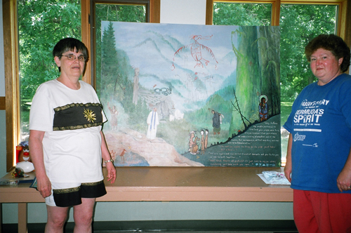
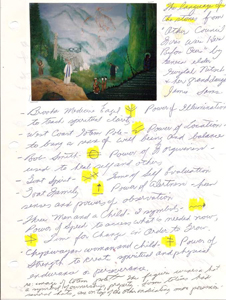
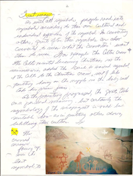

 
The Church and Society Committee of the Regina Presbytery she served on inspired Joyce Deutscher of Regina, Saskatchewan, to do this painting. Among other things they studied were the issues brought to light by the Aboriginal peoples who said they had nothing to celebrate on the 500th anniversary (1992) of Columbus coming to America. In addition the committee had study sessions for the group and for larger groups on the same issue arising out of the impact Columbus had on America. The painting took six months to research and complete. A number of images and symbols were taken from various sources. It was all woven in together with the intention of being fair to both sides of the question. About ten years later the painting was hung in a prominent spot in the home of an Aboriginal person on the 400 block of Montreal Street in Regina. It was the first thing one saw upon entering the house. It hung there for over two years before the house was sold. Visitors and partygoers at Brian's house found the painting interesting and often stopped to look at it. All this activity over the years plus several break-ins left the painting in tact. It seemed to have an aura about it that commanded respect.
Back to Gallery | Back to Main
Copyright 2008 Joyce Deutscher, all images are the property of Joyce Deutscher. Coded in 2008 by Nicolas Methot.
Updated 2010 by Scott Mepham